14/04/2023 — Một người đàn ông ở độ tuổi 60 bị đau ngực cấp và điện thế cao
Bản dịch tiếng Việt của bài "A man in his 60s with acute chest pain and high voltage" – Dr. Smith’s ECG Blog. Giữ nguyên toàn bộ 15 hình ảnh của bản gốc.
Người gửi: Ẩn danh; người viết: Pendell Meyers
Một người đàn ông ở độ tuổi 60 có tiền sử bệnh động mạch vành (CAD) và đã đặt 2 stent trước đây đến khoa cấp cứu (ED) vì đau ngực sau xương ức cấp tính, cảm giác nặng ngực, khởi phát khi đang ăn sáng khoảng một giờ trước và kéo dài liên tục từ đó, dù đội cấp cứu ngoài viện (EMS) đã cho dùng aspirin và nitroglycerin. Kèm theo có vã mồ hôi, nhưng không khó thở, buồn nôn hay nôn. Ông cho biết đã mắc covid cách đây 2 tuần, nhưng dường như đã hồi phục hoàn toàn.
Lúc phân loại (triage) 1104:

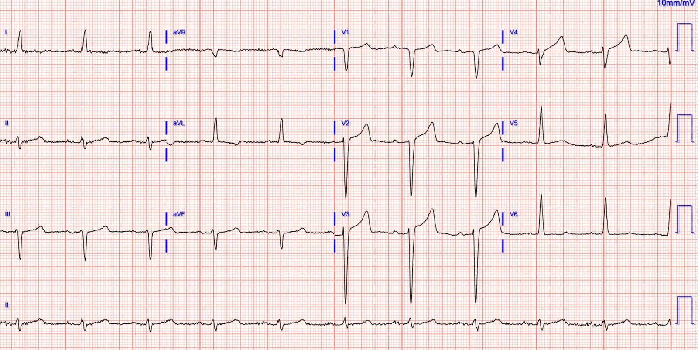
Điện tâm đồ lúc phân loại (triage) được gửi cho tôi mà không kèm bệnh sử (tôi không được xem các điện tâm đồ nền), và tôi đã nói rằng tôi nghĩ đây chỉ là LVH gây ST chênh lên (STE) và sóng T ở các chuyển đạo trước. Tôi nói với người gửi rằng tôi không thấy OMI. Tôi đã gửi điện tâm đồ này (không bệnh sử, không điện tâm đồ nền) cho Dr. Smith hai lần, cách nhau nhiều tháng, và ông cũng nói là LVH, không có OMI rõ ràng.
Kết quả đọc điện tâm đồ lúc phân loại của Queen of Hearts (PM Cardio): “Không phải OMI, độ tin cậy cao” (Not OMI high confidence)
Tuy nhiên, trong hồ sơ có lưu một số điện tâm đồ trước đây / điện tâm đồ nền:

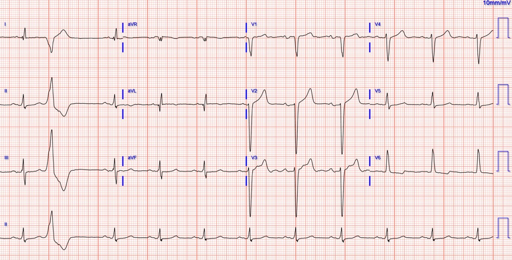

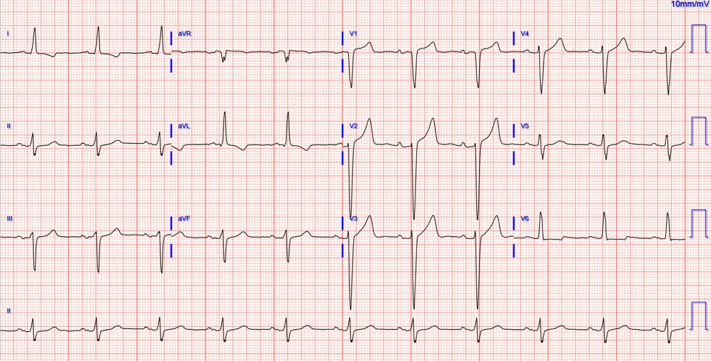
So với điện tâm đồ nền, ST chênh lên nhiều hơn ở các chuyển đạo trước, và diện tích dưới đường cong của sóng T ở V3 và V4 tăng đáng kể. Khi nhìn thấy sự so sánh này, chẩn đoán là OMI do LAD cho đến khi chứng minh được điều ngược lại.
Điện tâm đồ lúc phân loại được đọc đúng là “Không phải STEMI”. Do tình trạng của khoa cấp cứu lúc đó, bệnh nhân được xếp vào khu chờ.
Kết quả troponin I độ nhạy cao đầu tiên tăng, ở mức 25 ng/L (giới hạn trên bình thường ở nam giới với xét nghiệm này là 20 ng/L). Đáng tiếc, hành động duy nhất được thực hiện vào lúc này là làm lại troponin (bệnh nhân vẫn chờ ở khu chờ do tình trạng lưu giữ bệnh nhân chờ nhập viện (boarding) và quá tải tồi tệ).
Nói điều này khi nhìn lại thì dễ, nhất là khi không phải là người chịu trách nhiệm cho khu chờ quá tải đầy những bệnh nhân chưa được khám này, nhưng một bệnh nhân lớn tuổi đã biết có CAD, đau ngực kéo dài giống hội chứng vành cấp (ACS) dù đã điều trị nội khoa, với troponin dương tính, thì đã có chỉ định thông tim cấp cứu, bất kể điện tâm đồ thế nào!
Troponin lần hai trả về cao hơn, ở mức 45 ng/L. Điều này cuối cùng mới thúc đẩy việc ghi lại điện tâm đồ lúc 1341:

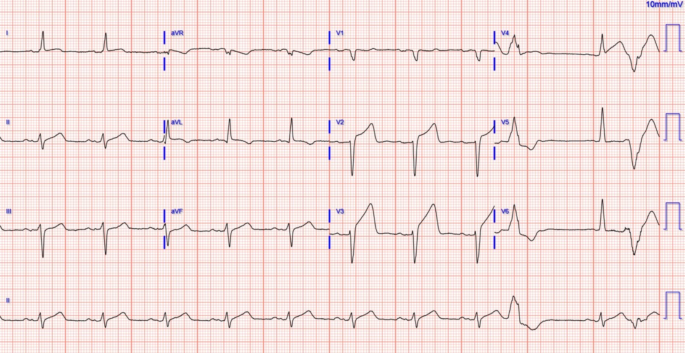
Lúc 1350:

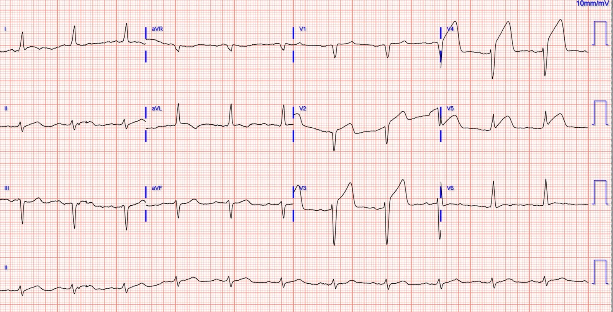
Thông tim lúc khoảng 14:15 xác nhận tổn thương thủ phạm ở LAD đoạn gần đến đoạn giữa, hẹp 100%, dòng chảy TIMI 0, cùng với CAD nặng lan tỏa ở các vị trí khác. Tổn thương được luồn dây dẫn qua và đặt stent, sau đó đạt dòng chảy TIMI 3.

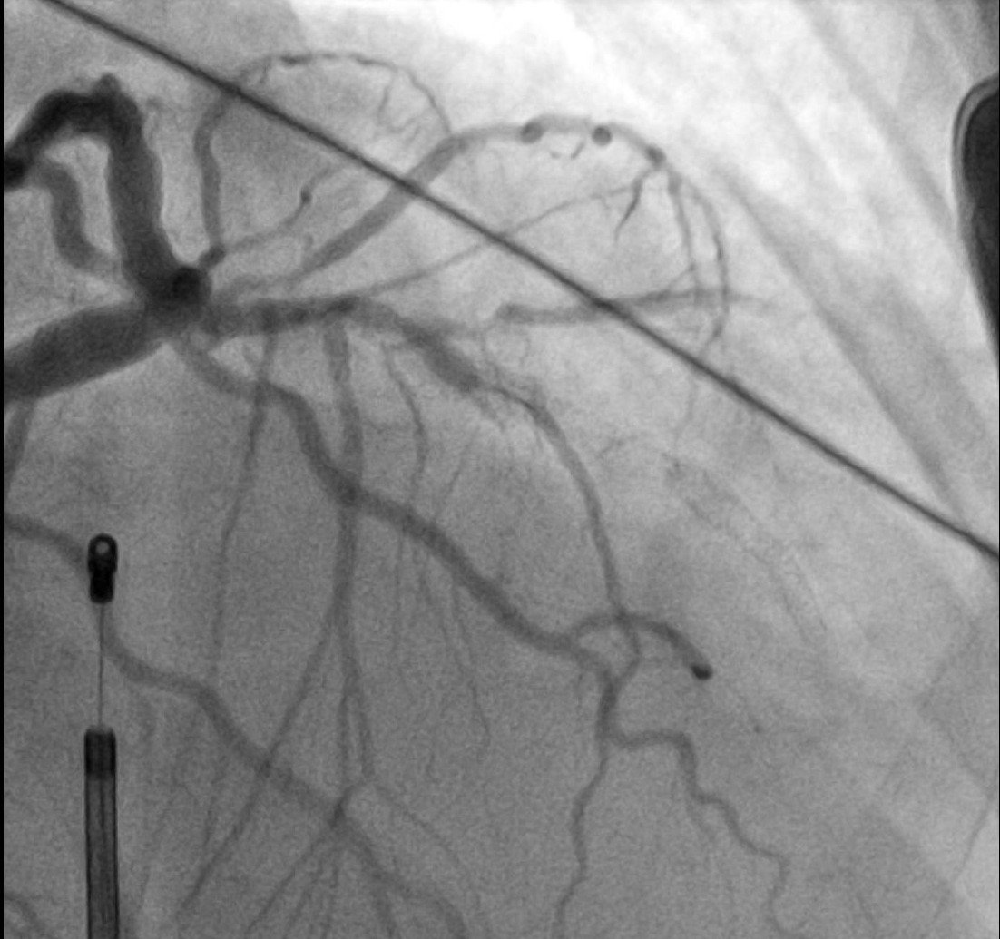

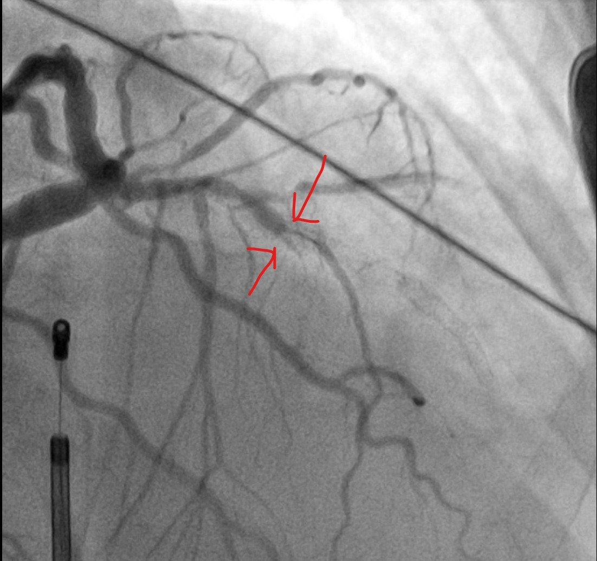

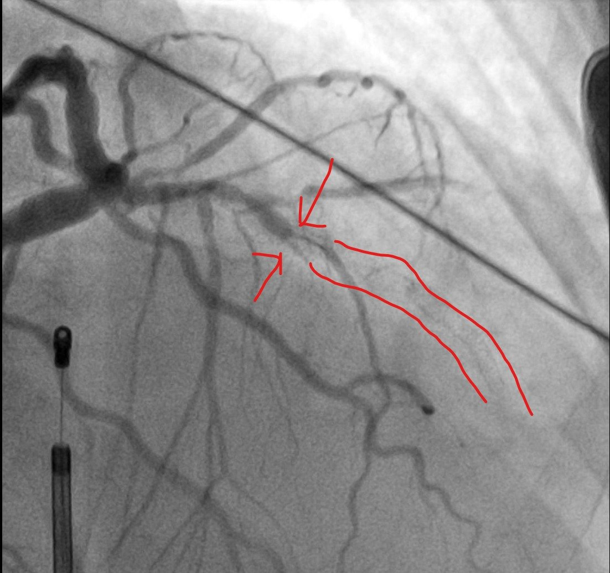

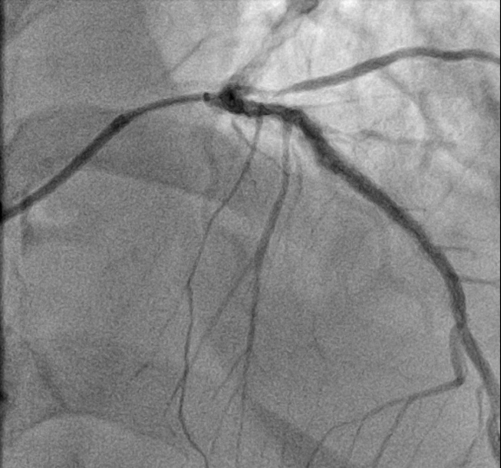

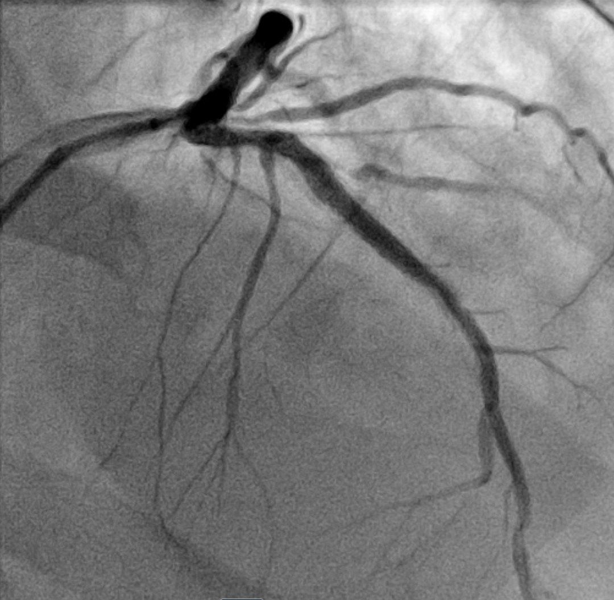
Tất cả các lần troponin sau đó đều trả về lớn hơn 25.000 ng/L (giới hạn trên có thể báo cáo của phòng xét nghiệm này).
1608, sau thông tim:

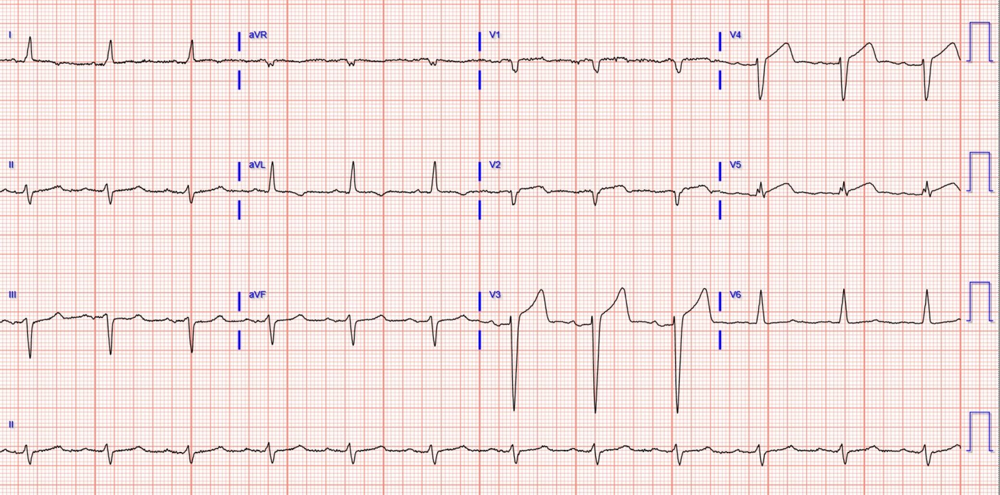
Lúc 1809:

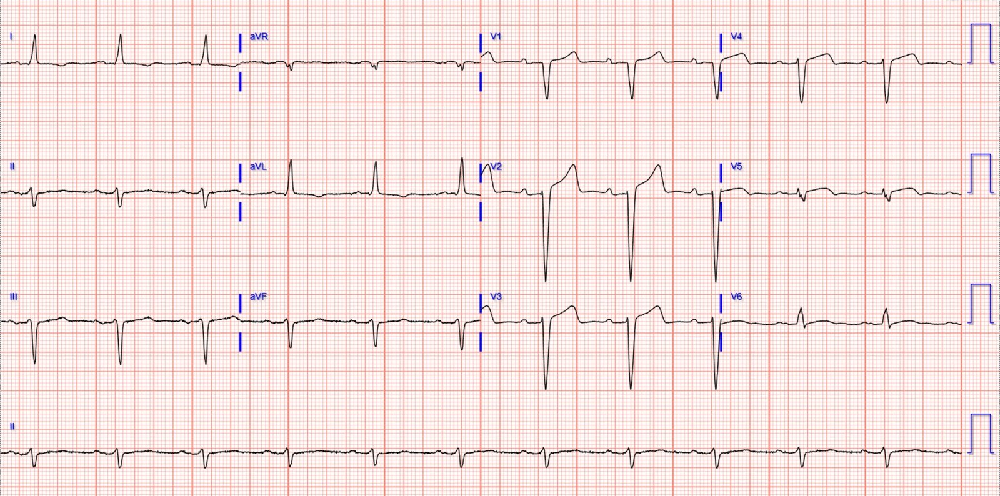
Siêu âm tim chính thức cho thấy EF 20% (EF trước đây trong hồ sơ là 34% cách đây 5 tháng), giảm động toàn bộ nặng, vô động cơ tim vùng giữa-mỏm, vô động cơ tim thành dưới-bên, thành dưới và dưới-vách.
2 tháng sau:

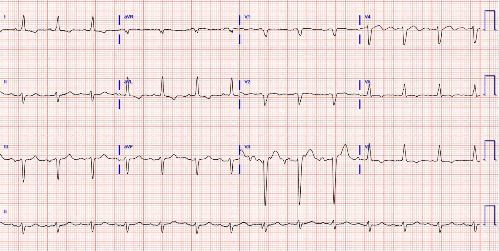
Bệnh nhân sống sót đến khi xuất viện và đến lần tái khám sau 2 tháng. Không có dữ liệu theo dõi dài hạn.
Những điểm cần học:
OMI là một chẩn đoán lâm sàng, mà điện tâm đồ là một xét nghiệm thay thế. Đôi khi người điều trị có thể thấy OMI trên điện tâm đồ, đôi khi thì không, ngay cả khi đã được đào tạo chuyên sâu. Đôi khi OMI chỉ có thể nhận ra khi so sánh với điện tâm đồ trước đó, như trường hợp của tôi trong ca này. Nhìn lại, giờ đây tôi thấy V4 trên điện tâm đồ lúc phân loại có vẻ vượt ngoài tỷ lệ bình thường. Có lẽ điều này sẽ giúp tôi nhận ra ca tương tự tiếp theo sớm hơn, để tránh sự chậm trễ 2,5 giờ như trong ca này.
Nếu may mắn, các điện tâm đồ liên tiếp có thể giúp biến một chẩn đoán khó thành một chẩn đoán dễ.
So sánh với điện tâm đồ nền là cực kỳ quan trọng. Đừng mặc định rằng một điện tâm đồ trước đó là điện tâm đồ nền.
Bệnh sử ACS rõ ràng với cơn đau kéo dài dù đã điều trị nội khoa và troponin đang tăng là chỉ định thông tim cấp cứu bất kể dấu hiệu trên điện tâm đồ.

==================================
BÌNH LUẬN CỦA TÔI, bởi KEN GRAUER, MD (14/4/2023):
==================================
Ca hôm nay quả thật đầy thử thách — đặc biệt vì chúng ta được xem điện tâm đồ ban đầu, nhưng không có bất kỳ bệnh sử nào.
- Để rõ ràng, trong Hình 1 — tôi đã đặt lại bản ghi ban đầu của ca hôm nay, kèm theo các hình phóng to dạng soi gương (mirror-image) của QRST ở chuyển đạo V3 và V4.
Chúng ta đã nhiều lần bàn về thách thức đặt ra khi có LVH rõ rệt ở một bệnh nhân đau ngực mới xuất hiện.
- Như trong lần gần đây nhất chúng tôi đề cập đến hiện tượng này (Xem Bình luận của tôi trong bài ngày 2 tháng Tư năm 2023 trên Dr. Smith’s ECG Blog) — thay đổi ST-T của “tăng gánh” thất trái thường biểu hiện nhất ở một hoặc nhiều chuyển đạo bên. Nhưng thay vì thấy thay đổi ST-T của “tăng gánh” thất trái ở các chuyển đạo bên — một số bệnh nhân biểu hiện “hình soi gương” của tăng gánh ở các chuyển đạo trước. Hình dạng đặc biệt nhọn của ST-T chênh lên ở chuyển đạo V2,V3 trong Hình 1 có thể phản ánh “tăng gánh” thất trái ở bệnh nhân này, với sóng S cực sâu ở 2 chuyển đạo trước này. Chẳng phải hình soi gương của ST-T trong ô chèn MÀU ĐỎ của chuyển đạo V3 ở Hình 1 trông phù hợp với hình ảnh “tăng gánh” thất trái có thể có ở các chuyển đạo bên của một bệnh nhân tăng huyết áp nặng hay sao?

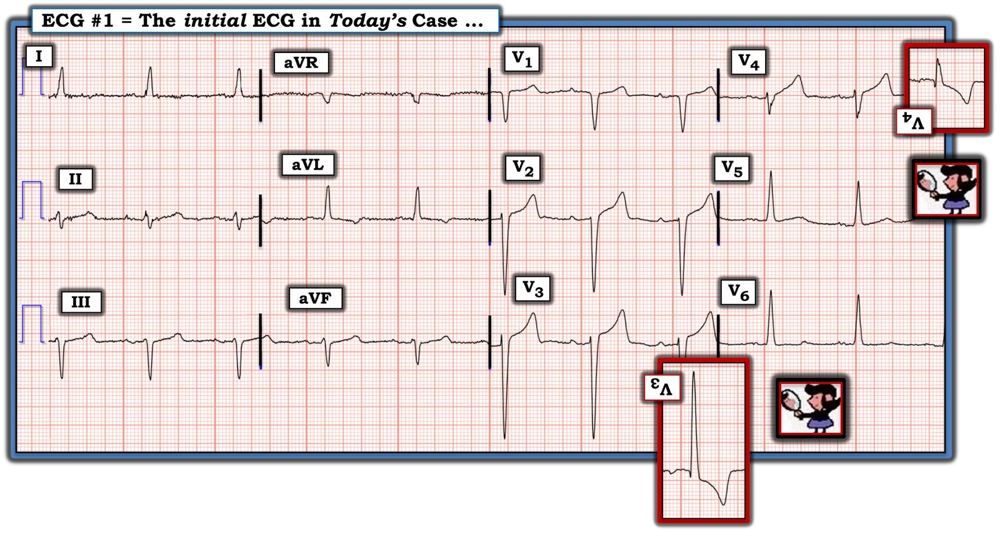
Còn chuyển đạo V4 thì sao?
Khi không có bệnh sử hỗ trợ — điện tâm đồ ban đầu của ca hôm nay không có giá trị chẩn đoán. Dù vậy — 1 chuyển đạo đã thu hút sự chú ý của tôi khi lần đầu nhìn bản ghi này là chuyển đạo V4.
- Như đã nói ở trên — hình dạng ST-T ở chuyển đạo V2,V3 trong Hình 1 có thể hoàn toàn phù hợp với hình ảnh “tăng gánh” thất trái ở các chuyển đạo trước.
- Ngược lại — ST-T ở chuyển đạo V4 trông cao không tương xứng (đồng thời “quá đầy đặn” (hypervoluminous)) so với biên độ QRS khiêm tốn ở chuyển đạo này. Tương tự, hình soi gương của ST-T ở chuyển đạo V4 (ô chèn MÀU ĐỎ) — trông âm không tương xứng, âm hơn mức có thể dự đoán đối với tăng gánh do LVH.
- Bằng chứng ủng hộ rằng hình dạng ST-T ở chuyển đạo V4 có khả năng đáng lo ngại (chứ không chỉ đơn giản phản ánh một “chuyển đạo chuyển tiếp” giữa QRS chủ yếu âm ở V3 và QRS dương hoàn toàn ở V5) — đến từ hình dạng ST-T ở chuyển đạo V5. Xét mức độ LVH rõ rệt có thể có ở bệnh nhân này (với sóng S = 26 mm ở chuyển đạo V3) — tôi ít nhất đã mong đợi một hình ảnh ST-T “tăng gánh” “cùn” (blunted) ở chuyển đạo bên V5 nếu mọi thay đổi trên điện tâm đồ đều là hậu quả của LVH, thay vì một sóng T dương bất ngờ ở chuyển đạo này (tức là, Lưu ý rằng chuyển đạo aVL có cho thấy hình ảnh ST-T “tăng gánh” “cùn”, với biên độ sóng R thậm chí còn thấp hơn so với ở chuyển đạo V5).
- Xin nhấn mạnh lần nữa: Khi không có bệnh sử hỗ trợ — điện tâm đồ ban đầu của ca hôm nay không có giá trị chẩn đoán. Nhưng việc ý thức được khó khăn khi cố nhận diện OMI cấp chồng lên LVH có sẵn — nên khiến chúng ta tập trung lo ngại vào những dấu hiệu ST-T có thể không tương xứng, vốn có thể báo hiệu thay đổi tối cấp sớm. Ghi lại điện tâm đồ trong vòng 15-30 phút thường sẽ giải quyết được câu hỏi về mức độ cấp tính.
Những điểm cần học bổ sung:
- Tầm quan trọng của việc đối chiếu điện tâm đồ với bệnh sử lâm sàng không thể bị xem nhẹ. Ngay khi tôi biết bệnh sử của ca hôm nay (tức là, bệnh nhân hôm nay có tiền sử bệnh mạch vành đã được xác định — và đến khám vì đau ngực dữ dội, mới khởi phát) — khả năng các dấu hiệu điện tâm đồ mô tả ở trên tại chuyển đạo V4,V5 chỉ điểm một biến cố cấp đang diễn ra đã tăng lên đột ngột!
- Như Dr. Meyers đã nêu — sự xác nhận một biến cố cấp đang diễn ra đã đến ngay lập tức khi lấy được các điện tâm đồ nền của bệnh nhân này.
- Sự xác nhận một biến cố cấp đang diễn ra cho đến khi chứng minh được điều ngược lại cũng đến ngay lập tức vào lúc có kết quả troponin ban đầu tăng nhẹ (tức là, ở mức = 25 ng/L — so với giá trị trên bình thường là 20 ng/L). Như Dr. Meyers đã nêu — “một bệnh nhân lớn tuổi đã biết có CAD, đau ngực kéo dài giống ACS dù đã điều trị nội khoa, với troponin dương tính, là chỉ định thông tim cấp cứu bất kể điện tâm đồ thế nào!”.
- Việc xem xét hồi cứu những ca đầy thử thách như ca hôm nay mang lại hiểu biết vô giá. Việc thấy sự phân bố của ST chênh lên xuất hiện sau đó trên các bản ghi liên tiếp — và so sánh điều này với các dấu hiệu ban đầu kín đáo dạy cho chúng ta nhiều điều, vì nó soi một ánh sáng mới lên bản ghi ban đầu.
- Cuối cùng — Dù ứng dụng AI Queen of Hearts của PM Cardio thực sự ấn tượng trong việc nhận diện OMI cấp — nó không hoàn hảo. Không ứng dụng máy tính nào có thể thay thế sự giám sát và phán đoán của bác sĩ lâm sàng. Thay vào đó — Queen of Hearts là một công cụ hỗ trợ vô giá cho người bác sĩ biết tư duy — và tôi rất ngờ rằng một điện tâm đồ ghi lại 15-30 phút sau bản ghi ban đầu sẽ được cả bác sĩ lâm sàng lẫn Queen of Hearts đọc là cấp tính.